1 患者情報入力画面の詳細
この章は、患者情報を入力する画面の詳細について説明します。
（操作手順の詳細は、取扱説明書「基本編」参照）
|
|
＊システム負荷が高い操作は以下になります
サイズの大きいデータの保存
読み込み
コピー
コンバートなど
詳しくは「4 Attenuation Imaging（ATI）モード」を参照ください。
1-1 各部の説明
入力・選択時のフォーカス枠は、以下の操作で移動できます。 CUS-AFL00の操作 ・ ソフトウェアキーボードの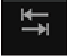キー ・ 操作 ・ タッチパネルのスイッチ操作（1.2節参照） 装置共通の操作 ・トラックボールでのカーソル操作 |
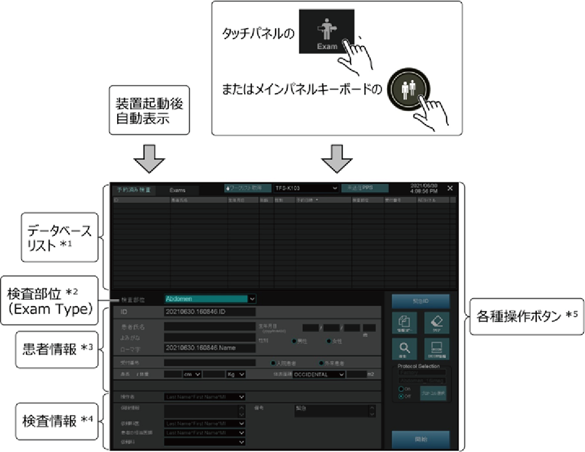
*1：1.1.1項参照
*2：1.1.2項参照
*3：1.1.3項参照
*4：1.1.4項参照
*5：1.1.5項参照
1-1-1 データベースリスト
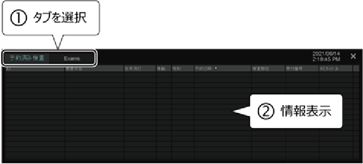
| 項目 | 内容 |
|---|---|
| 予約済み検査 | 病院情報システムを使った予約情報（詳細は1.1.1.2項参照） |
| Exams | 過去に検査を実施した患者情報（詳細は1.1.1.1項参照） |
1-1-1-1 過去の検査情報の利用
過去の検査情報を検索できます。検索結果からデータを選択すると、患者情報がコピーされます。
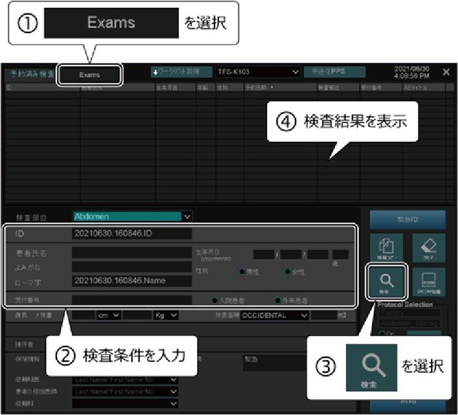
|
*：CUS-AFL00の操作
1-1-1-2 検査予約情報の受信
HIS/RISサーバ上に保存されている検査予約情報を取得します。取得結果からデータを選択すると、患者情報がコピーされます。
この機能を使用するときは、オプションのUSCO-DICOMが必要です。
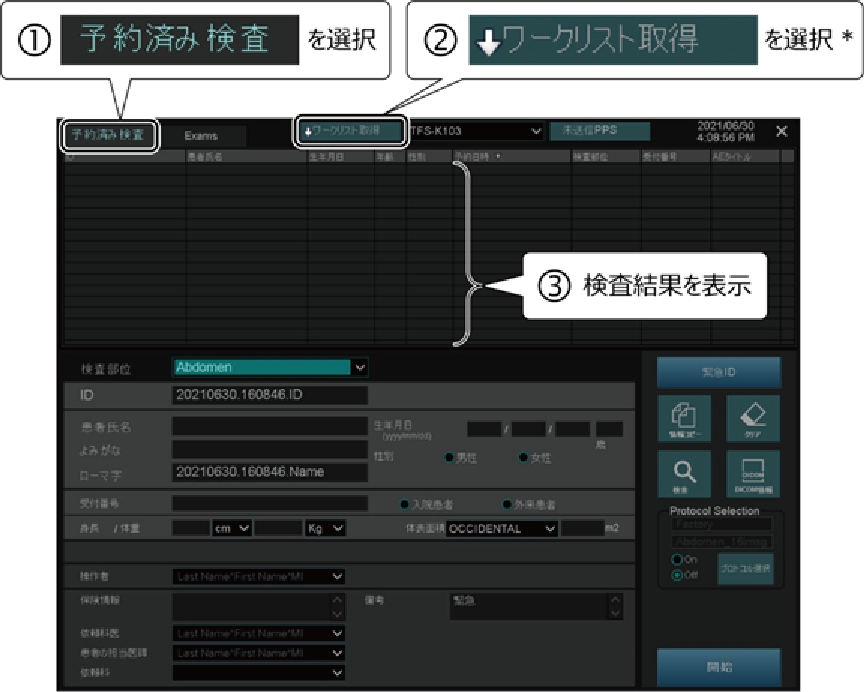
*：タッチパネルの、または機能メニューエリアのでも可
|
*2： 患者氏名には、以下のいずれか1つを使用したあいまい検索ができます。
ただし、上記の項目を混在させた検索はできません。
*1：タッチパネルの、または機能メニューエリアのでも可
|

1-1-1-2-1 ネットワーク障害時に一時保存したデータの表示
一時保存したDICOMデータを表示できます。
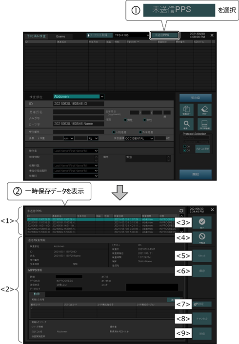
| No. | 項目 | 内容 |
|---|---|---|
<1> | 上段ウィンドウ | 一時保存したデータをリスト表示 |
<2> | 下段ウィンドウ | 上段ウィンドウで選択したデータの詳細を表示、編集 |
<3> | ネットワーク障害により一時保存した検査進行情報を、検査完了状態にする | |
<4> | ネットワーク障害により一時保存した検査進行情報を、検査中断状態にする | |
<5> | 編集中のデータをリセット | |
<6> | 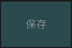 | 編集したデータの保存 |
<7> | ネットワークが一時的に使えなくなっているときの設定
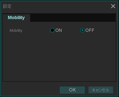 | |
<8> | 編集の中止、画面の終了 | |
<9> | 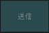 | 一時保存された検査進行情報を再送 |

1-1-1-2-2 検査予約情報の詳細確認画面
検査予約情報の詳細を表示して、追加・削除・編集できます。
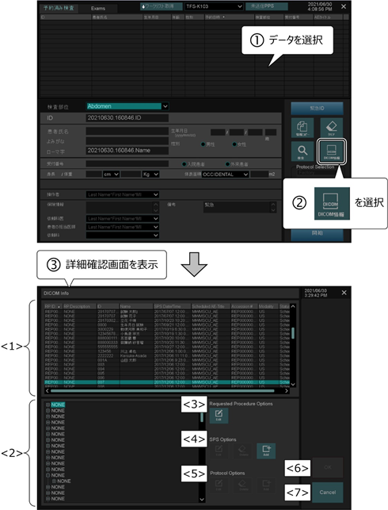
HIS/RISサーバの運用方法に応じた設定が必要になります。設定の変更については、最寄りのサービスセンタにお問い合わせください。 |
No. | 項目 | 内容 |
|---|---|---|
<1> | 上段ウィンドウ | 編集したい予約検査情報を下段ウィンドウで選択すると、上段ウィンドウに情報が表示される ♦ 編集した予約検査情報を選択したとき、編集した結果を一時保存できる |
<2> | 下段ウィンドウ | HIS/RISサーバから取得した予約検査情報をツリー表示 |
<3> | Requested Procedure Options | 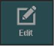 ： Requested Procedure（RP）編集 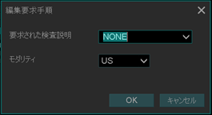 |
<4> | SPS Options | 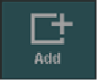 ： Scheduled Procedure Step（SPS）追加 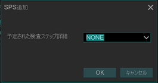 ： SPS編集 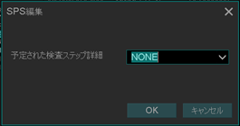 ： SPS削除 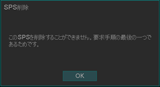 以下の画面が表示され、予約検査をしない理由を選択できる 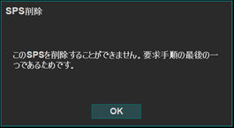 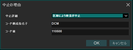 |
<5> | Protocol Options | ： Protocol Code追加 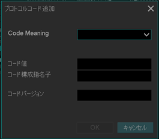 ： Protocol Code編集 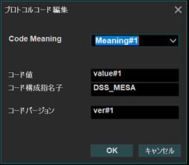 ： Protocol Code削除 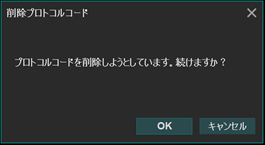 |
<6> | 編集の保存 | |
<7> | 編集の中止、画面の終了 |
1-1-2 検査部位（Exam Type）
検査内容に合わせて検査部位を選択します。
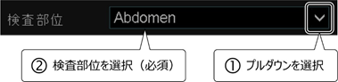検査部位
検査内容
検査部位
検査内容
Abdomen
腹部一般
Neo-Head
新生児頭
Carotid
頸動脈
Neo-General
新生児腹部一般
Thyroid
甲状腺
Neo-Hip
新生児股関節
Breast
乳腺
PV-Venous
末梢静脈
OB
産科
PV-Arterial
末梢動脈
GYN
婦人科
Digits
末梢血管（指）
Endo-Vaginal 経膣
MSK
整形
Fetal Heart 胎児循環器
Prostate
前立腺
Adult Heart 循環器一般
Kidney
腎臓
Pediatric Heart 小児循環器
Testes
睾丸
Coronary 冠動脈
OTHER
その他
TCD 経頭蓋
Lung
肺
- 選択した検査部位で、プローブ、イメージングプリセット（画質調整パラメータ初期値など）が自動的に選択されます。